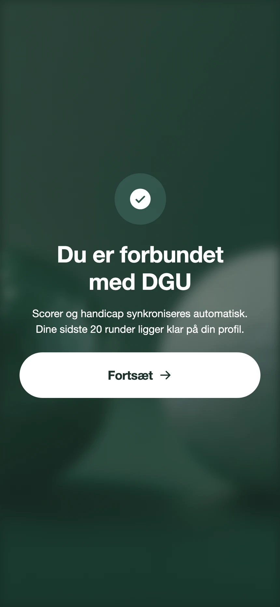
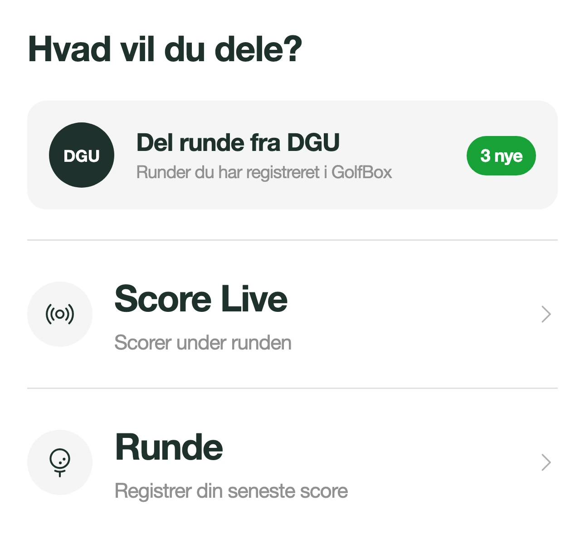
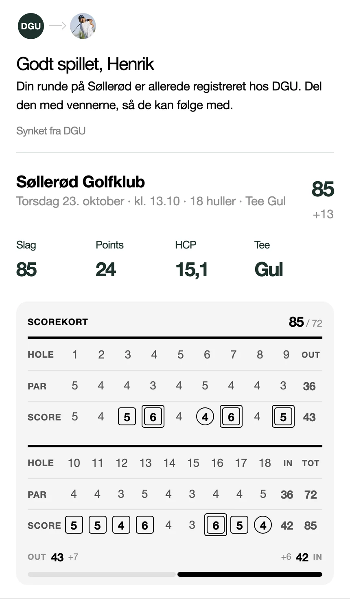
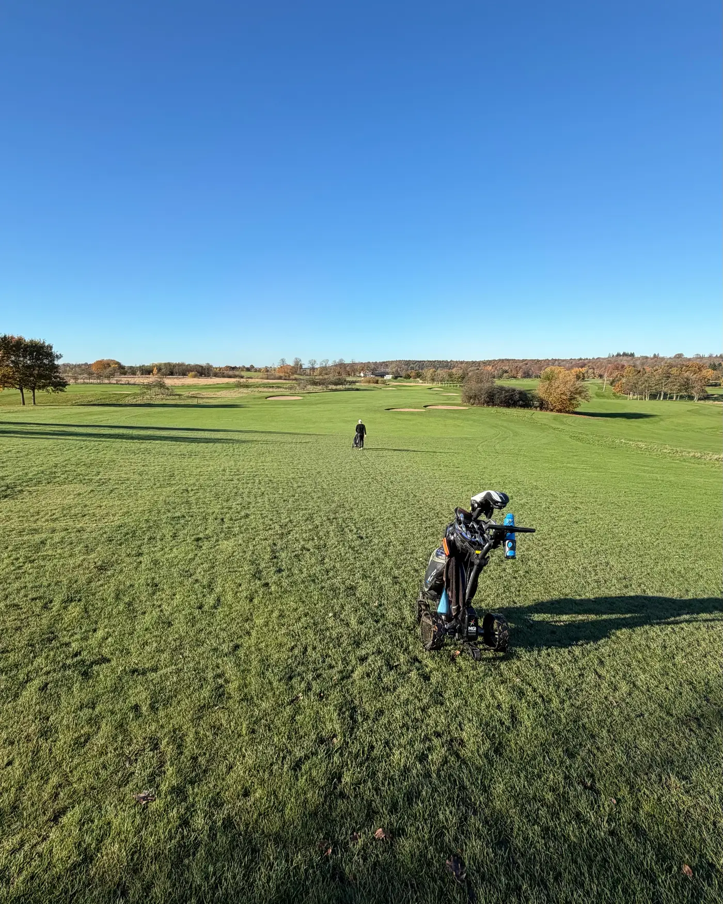

Golfsocial og DGU
Hvordan hænger Golfsocial sammen med DGU?
Golfsocial har en officiel aftale med Dansk Golf Union. Forbind din DGU-konto én gang. Så er dit handicap altid opdateret, dine runder fra DGU kommer ind med DGU Sync, og en tællende runde fra appen går til dit DGU-handicap.



Sådan bruger du Golfsocial med DGU
Én gang forbundet, så kører resten af sig selv.
- Hent Golfsocial i App Store, og opret dig.
- Tryk Forbind med DGU, og log ind. Så henter appen dit handicap og dine runder.
- Med DGU Sync kommer dine runder fra DGU ind i appen. Tryk på bolden, og vælg Del runde fra DGU.
- Fører du scoren i Golfsocial, vælger du en medspiller som markør. Når markøren har godkendt, tæller runden med i dit DGU-handicap.
- Dit handicap opdateres fra DGU, og du følger det runde for runde under Udvikling.
DGU Sync: dine runder fra DGU er klar til at dele
Runder, du har registreret hos DGU, kommer ind i Golfsocial med DGU Sync. Du ser scorekortet, trykker Post på Golfsocial, og vennerne kan følge med. Runden tæller ikke dobbelt, for den ligger allerede hos DGU.

Tællende runder går den anden vej
Fører du scoren i Golfsocial, kan runden tælle med i dit DGU-handicap. Vælg en medspiller som markør. Når markøren har godkendt scorekortet, sendes runden til DGU.
Sådan registrerer du en tællende runde
Golfsocial og DGU
- Aftale
- Officiel aftale med Dansk Golf Union
- Handicap
- Hentes fra DGU og holdes opdateret
- DGU Sync
- Dine runder fra DGU kommer ind i appen, klar til at dele
- Tællende runder
- Sendes til DGU, når markøren har godkendt
- Tæller ikke dobbelt
- Deler du en runde i Golfsocial, tæller den kun én gang til dit handicap
- Pris
- Gratis

Omkring 600 golfere har logget næsten 800 runder i Golfsocial.
Golfsocial er gratis at spille med vennerne: live score, spilleformerne, grupperne og feedet.
Spørgsmål og svar
Har Golfsocial en aftale med DGU?
Ja. Golfsocial har en officiel aftale med Dansk Golf Union. Derfor kan appen hente dit handicap og dine runder fra DGU.
Hvordan forbinder jeg Golfsocial med DGU?
Tryk Forbind med DGU i appen, og log ind. Så henter appen dit handicap og dine runder.
Er mit handicap i Golfsocial det samme som hos DGU?
Ja. Appen henter dit handicap fra DGU og holder det opdateret.
Hvad er DGU Sync?
DGU Sync henter de runder, du har registreret hos DGU, ind i Golfsocial. De ligger klar under Del runde fra DGU. Tryk Del runde, så kommer runden i feedet med scorekortet.
Tæller en runde dobbelt, hvis jeg deler den i Golfsocial?
Nej. Runden ligger allerede hos DGU. Når du deler den i Golfsocial, ser dine venner den, og den tæller stadig kun én gang til dit handicap.
Kan jeg registrere en tællende runde i Golfsocial?
Ja. Vælg en medspiller som markør, og gem runden. Når markøren har godkendt, tæller runden med i dit DGU-handicap.
Hvad koster det?
Golfsocial er gratis at spille med vennerne: live score, spilleformerne, grupperne og feedet.
Hvor mange bruger Golfsocial?
Omkring 600 golfere har logget næsten 800 runder i Golfsocial (november 2026).